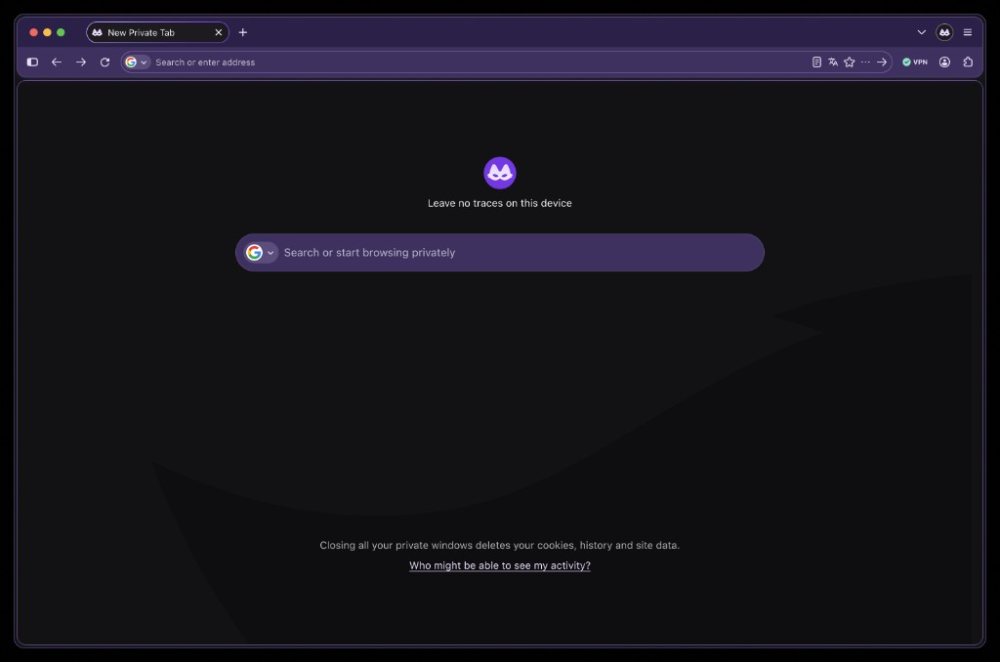
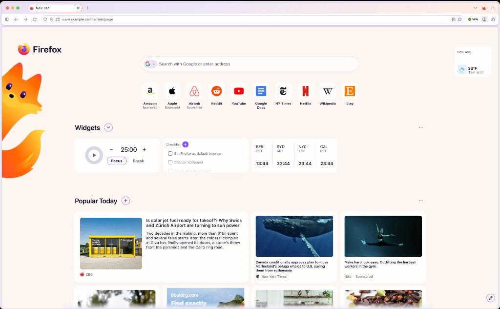
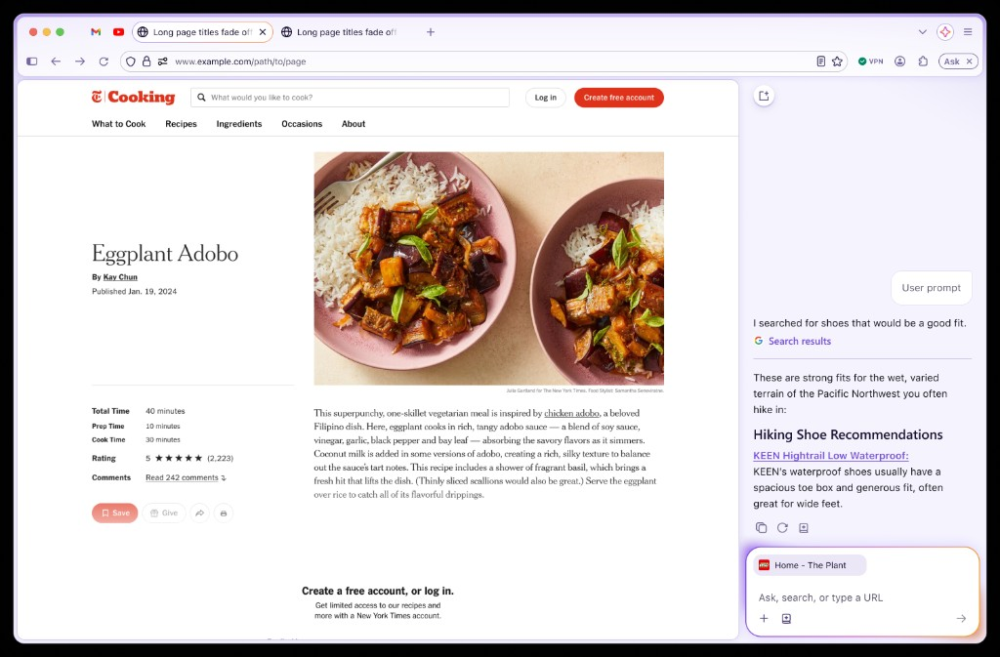
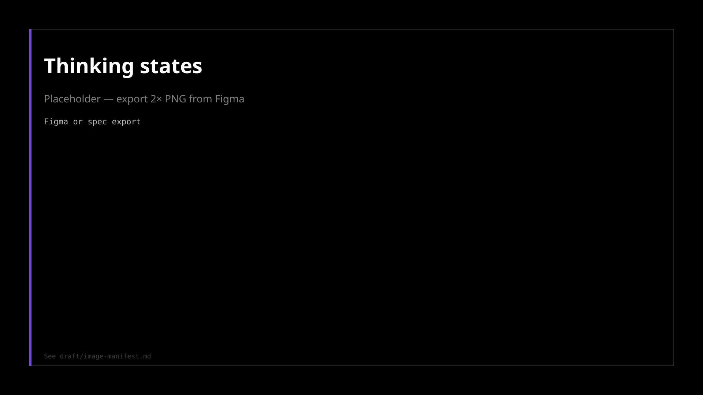

Project Nova
Firefox's 2026 redesign, in Nightly.
Read →


Every browser is adding AI. The risk isn't being late. It's stapling a chatbot to chrome and calling it innovation. Smart Window has to feel opt-in, trustworthy, and distinctly Firefox.
Classic Mode is still Firefox. AI Mode is for when you want the browser to carry more of the task, with consent.
| Mode | Frame |
|---|---|
| Private | On-device, maximum privacy |
| Classic | Familiar Firefox; light intelligence you can ignore |
| AI Mode / Smart Window | Opt-in, context-aware assistant on Mozilla's terms |

draft/image-manifest.mdMore case studies